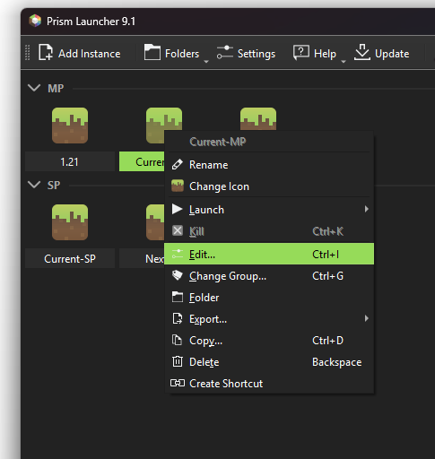
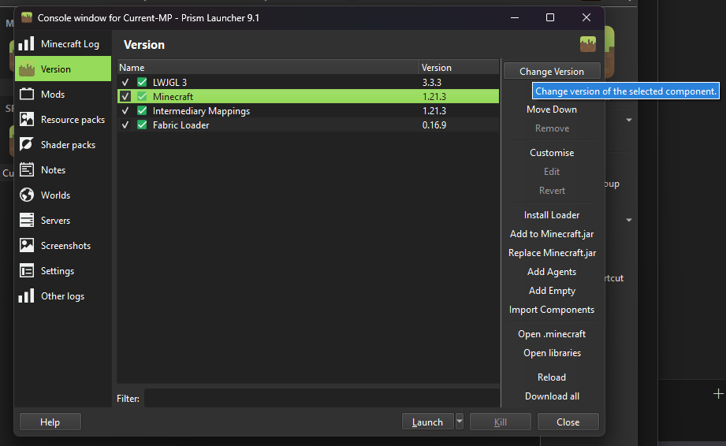
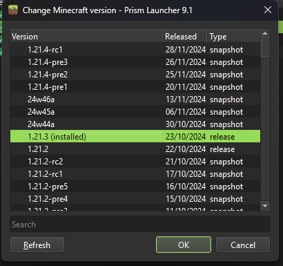
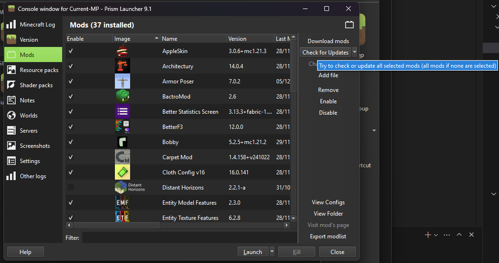

Server Info
- URL:
-
minecraft.luhelan.ch
- Current version:
-
1.21.4
Downloads
Prism Launcher with mods and shaders:
Prism Launcher download with mods for 1.21.4
Mods only:
Mods only download for 1.21.4
Updating an existing Prism instance
-
Edit the instance

-
Go to the "Version" tab, click "Minecraft" in the list, click on "Change Version"

-
Select the new version to use

-
Go to the "Mods" tab and click on "Check for Updates". Confirm the following dialogs. Sometimes this crashes the whole launcher, in that case just try again :))
